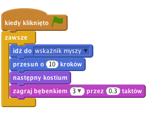
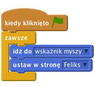
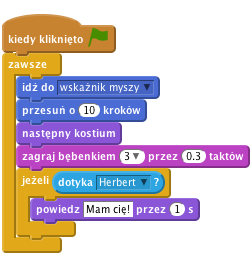
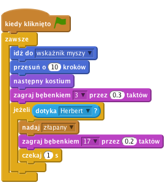
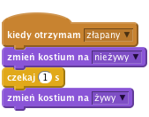
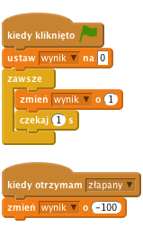

Feliks i Herbert
Poziom 1
Zrobimy grę w berka, w której kot Feliks goni mysz o imieniu Herbert. Będziesz sterować Herbertem przy pomocy myszki i masz za zadanie nie dać się złapać Feliksowi. Im dłużej będziesz przed nim uciekać, tym więcej punktów zdobędziesz. Nie daj się złapać, bo stracisz punkty!

Stwórz nowy projekt.
Kliknij na scenę na lewo od duszka, następnie kliknij zakładkę Tła, a później kliknij na obrazek Wybierz z biblioteki i zaimportuj tło „hall” z katalogu „Indoors”. Usuń puste tło z listy.
Stwórz poniższy skrypt:

Kliknij zieloną flagę.
Czy Feliks podąża za kursorem myszy? Czy wygląda jakby chodził? Czy porusza się z odpowiednią prędkością?
Teraz sprawimy, aby Feliks zaczął gonić Herberta zamiast podążać za kursorem myszy.
wybierz nowego duszka z biblioteki i wybierz Zwierzęta/Mouse1.Dodaj poniższy skrypt do Herberta:

Wciśnij zieloną flagę.
Czy Herbert podąża za kursorem myszy? Czy Feliks goni Herberta?
Chcemy, aby Feliks nam powiedział, że złapał Herberta.
Zmień skrypt Feliksa na poniższy:

Wciśnij zieloną flagę.
Czy Feliks mówi, że złapał Herberta?
Zamiast wiadomości od Feliksa, że złapał mysz, chcemy, aby Herbert zamienił się w ducha.
Zamień skrypt Feliksa na poniższy, aby nadać wiadomość o złapaniu Herberta.

Dodaj Herbertowi nowy kostium: zaznacz Herberta, przejdź do zakładki Kostiumy i kliknij wybierz kostium z biblioteki. Wybierz kostium Fikcja/ghost2-a.
Zmniejsz nowy kostium klikając na niego w edytorze i przeciągając róg prostokąta, który się pojawi.
Zmień nazwy kostiumów Herberta: mysz nazwij „żywy”, a ducha - „nieżywy”.
Dodaj nowy skrypt do Herberta, który zamienia go w ducha:

Wciśnij zieloną flagę.
Czy Herbert zamienia się w ducha, gdy zostanie złapany?
Czy Feliks wydaje odpowiednie odgłosy w odpowiednich momentach?
Czy po złapaniu Feliks nie rusza się odpowiednio długo, aby Herbert mógł od niego uciec?
Dodajmy licznik punktów, aby było widać, jak dobrze nam idzie ratowanie Herberta.
Zaczniemy od zera i co sekundę będziemy dodawać jeden punkt. Gdy Feliks złapie Herberta, odejmiemy sto punktów.
Stwórz zmienną o nazwie „Wynik” dla wszystkich duszków. Aby to zrobić, kliknij na Dane, stwórz zmienną i nazwij ją wynik. Upewnij się, że opcja "Dla wszystkich duszków" jest zaznaczona.
Kliknij na Scenę i dodaj oba poniższe skrypty:

Wciśnij zieloną flagę.
Czy wynik rośnie co sekundę o jeden punkt?
Czy ilość punktów spada o 100, kiedy Herbert zostanie złapany?
Co się dzieje, kiedy Herbert zostanie złapany zanim wynik wzrośnie do 100? Czy wynik zeruje się przy rozpoczęciu nowej gry?
Brawo! To by było na tyle, teraz możesz cieszyć się swoją grą!
Nie zapomnij, że możesz podzielić się swoją grą ze swoimi przyjaciółmi i rodziną. Żeby to zrobić, kliknij menu Udostępnij.